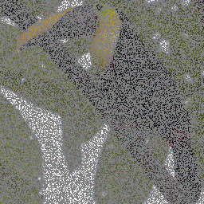
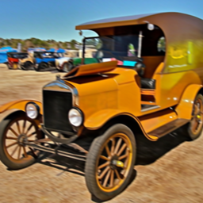
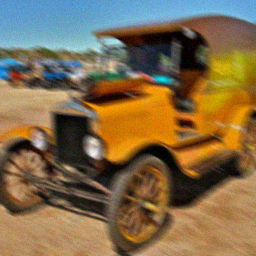
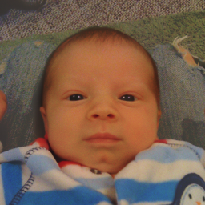
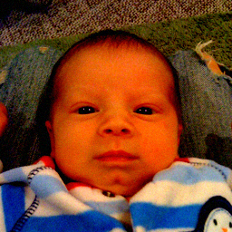
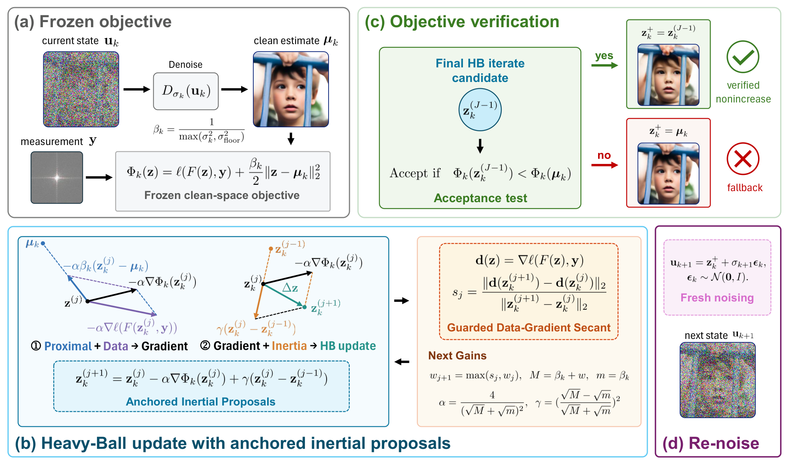
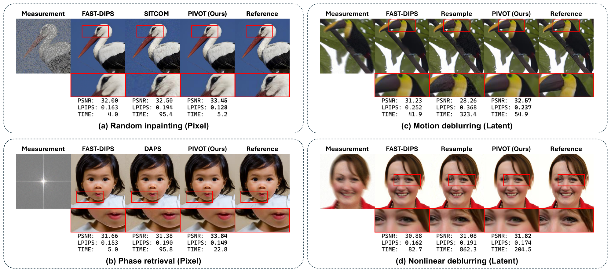

PIVOT
Anchored Inertial Proposals with Objective Verification for Diffusion-Prior Inverse Problems
Reconstruction viewer
Drag each divider to compare the measurement with PIVOT.





Abstract
A measurement update can improve the data fit at one diffusion step and still disrupt the denoising steps that follow. PIVOT uses the denoiser’s clean prediction as an anchor and asks whether a proposed correction is worth keeping.
Heavy-ball iterations propose a clean state with step size and momentum set from measured curvature. A separate test accepts it only if it lowers the frozen objective. The selected state is re-noised to continue sampling. This rule works in pixel and latent space with a pretrained prior and requires one denoiser call per noise level.
The method
Propose with Inertia, Verify with an Objective Test.
- Anchor
- Freeze the denoiser prediction. The local objective combines measurement error with a quadratic penalty for moving away from this anchor.
- Propose
- Take inertial steps from the anchor. Changes in the data gradient estimate the curvature and determine the step size and momentum.
- Verify
- Compare the final proposal with the anchor on the same objective. Keep the proposal on a strict decrease, then add noise at the next scheduled level.


Visual comparisons

Benchmark results
Table 1 · NeurIPS 2026Eight inverse problems on FFHQ and ImageNet. Each task uses 100 images at 256 × 256. Runtime is the average sampling time per draw on one RTX 6000 Ada GPU.
| Method | PSNR ↑ dB | SSIM ↑ | LPIPS ↓ | Time ↓ s |
|---|---|---|---|---|
| PIVOT | 29.666 | 0.847 | 0.249 | 1.305 |
| FAST-DIPS | 29.573 | 0.841 | 0.244 | 1.394 |
| DAPS | 28.619 | 0.764 | 0.262 | 28.257 |
| SITCOM | 29.153 | 0.826 | 0.231 | 15.755 |
| DMPlug | 28.637 | 0.797 | 0.253 | 118.255 |
| DCDP | 27.611 | 0.785 | 0.225 | 4.719 |
Citation
If you use PIVOT in your research, please cite the NeurIPS 2026 paper.
@inproceedings{kim2026pivot,
title = {Anchored Inertial Proposals with Objective Verification for Diffusion-Prior Inverse Problems},
author = {Kim, Minwoo and Shin, Seunghyeok and Kim, Dabin and Lim, Hongki},
booktitle = {Advances in Neural Information Processing Systems},
year = {2026},
url = {https://openreview.net/forum?id=8wurOw8o4D}
}